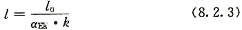
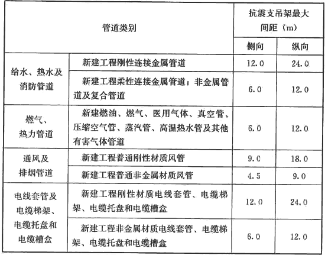
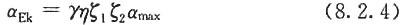

8．2 抗震支吊架计算
8．2．1 水平地震力应按额定负荷时的重力荷载计算。
8．2．2 干管的侧向抗震支撑应计入未设抗震支撑支管道的纵向水平地震力。
8．2．3 水平管线侧向及纵向抗震支吊架间距应按下式计算：

式中：l――水平管线侧向及纵向抗震支吊架间距(m)；
l0――抗震支吊架的最大间距(m)，可按表8．2．3的规定确定；
αEk――水平地震力综合系数，该系数小于1．0时按1．0取值；
k――抗震斜撑角度调整系数。当斜撑垂直长度与水平长度比为1．00时，调整系数取1．00；当斜撑垂直长度与水平长度比小于或等于1．50时，调整系数取1．67；当斜撑垂直长度与水平长度比小于或等于2．00时，调整系数取2．33。
表8．2．3 抗震支吊架的最大间距

注：改建工程最大抗震加固间距为上表数值的一半。
8．2．4 水平地震力综合系数可按下式计算：

8．2．5 抗震支吊架应根据所承受荷载按本规范第3．4节的规定进行抗震验算，并调整抗震支吊架间距，直至各点均满足抗震荷载要求。